📝 Overview
The goal of this assignment is to learn image mosaicing by taking two or more photographs
and creating an image mosaic by registering, projective warping, resampling,
and compositing them. This includes computing homographies and using them to warp images.
📍 Part 1: Shoot and Digitize Photos
First, I took the photos. I got to see a really nice sunset with the bay bridge,
so I knew I wanted to use that!
|
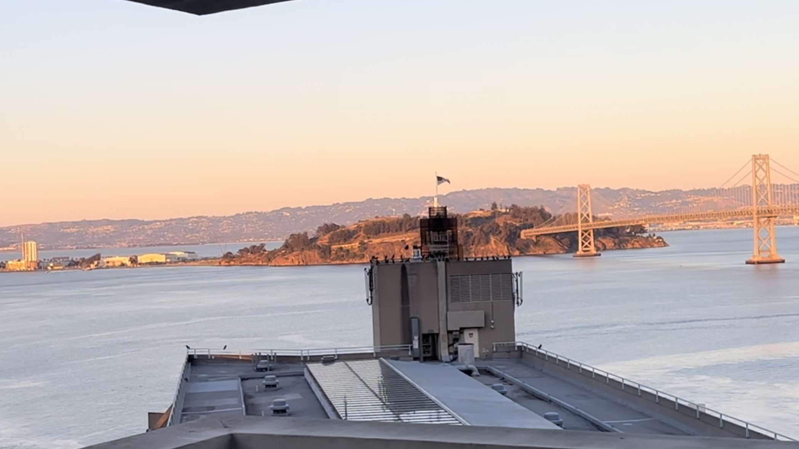
bridge0
|
bridge1
|
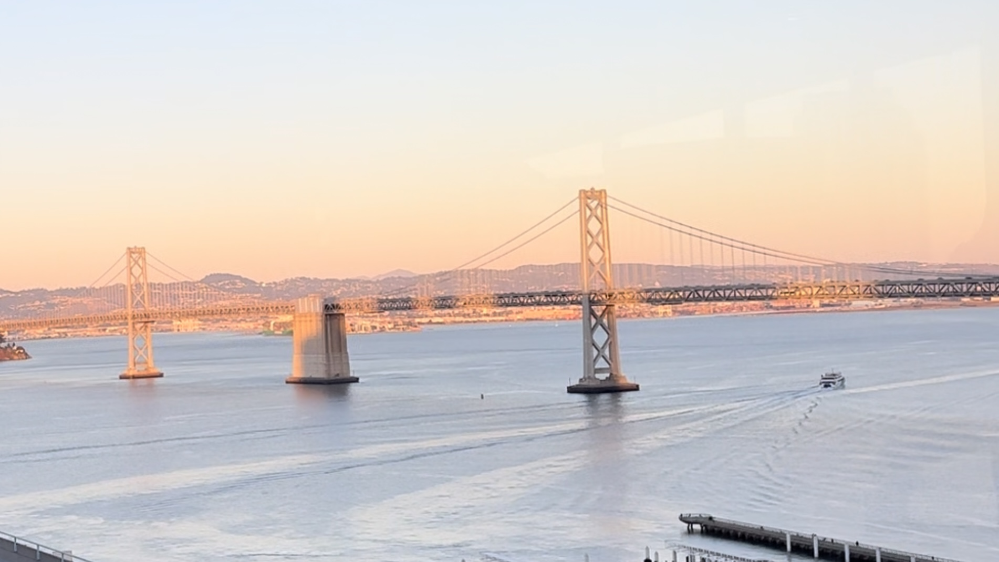
bridge2
|
🌟 Part 2: Recover Homographies
Next, we need to recover the parameters of the transformation between each pair of
images. This is done by solving p’=Hp, where H is a 3x3 matrix with 8 degrees of freedom.
I achieved this by implementing the function H = computeH(im1_pts,im2_pts). I also
used a patching function to adjust the points to each other.
To achieve this, we selected corresponding points to connect each of the three photos.
|
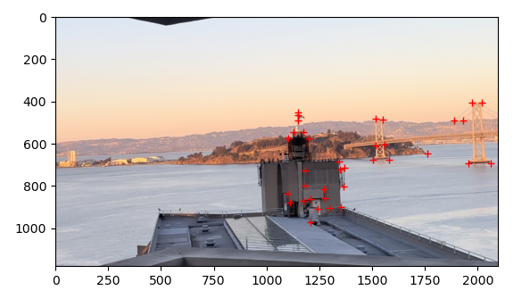
bridge0 to bridge1
|
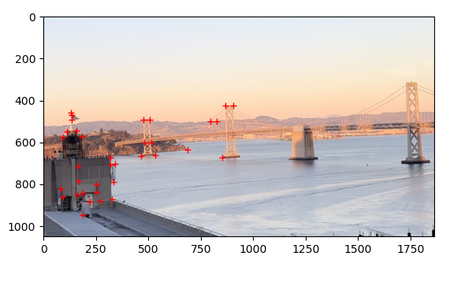
bridge1 to bridge0
|
|
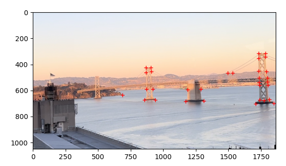
bridge1 to bridge2
|
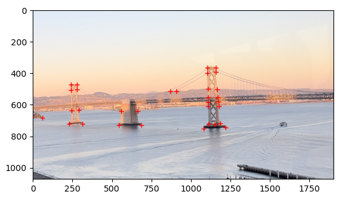
bridge2 to bridge1
|
🎬 Part 3: Warp Images
Next, we needed to warp the images to correspond to each other, which we can do with the H that we previously calcuated.
We make a imwarped = warpImage(im,H) function to achieve this. The blue dot is to show the midpoint calculated
between the left and middle photo, and the red is for the middle and right photo.
We can demonstrate this on a more simple example. Here are two photos I took.
|
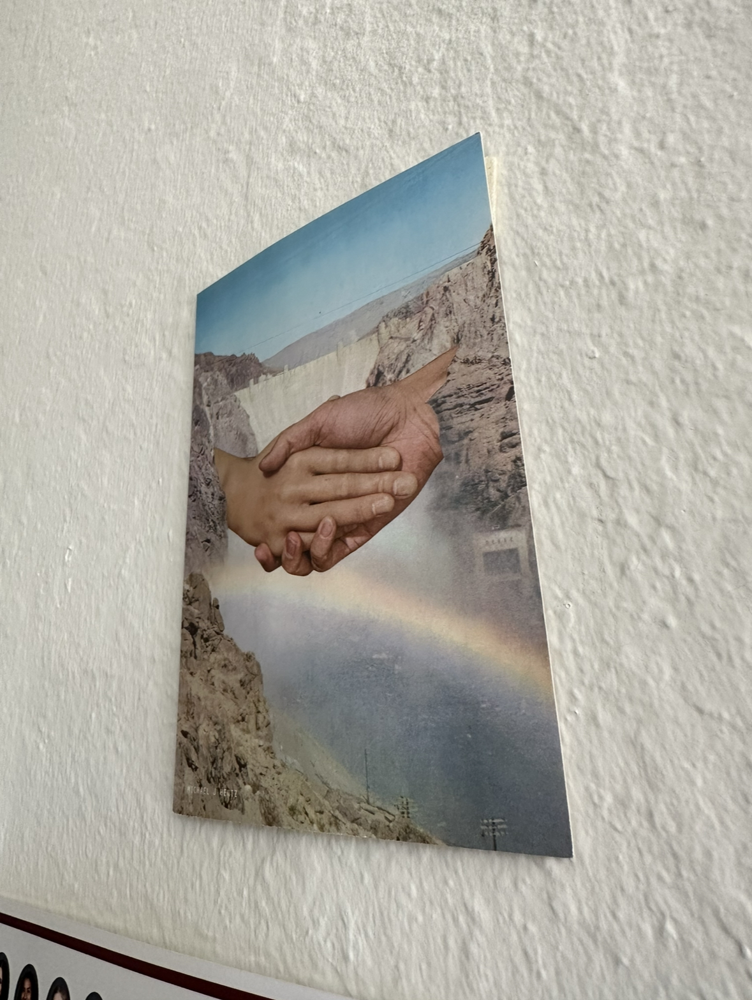
hands poster normal
|
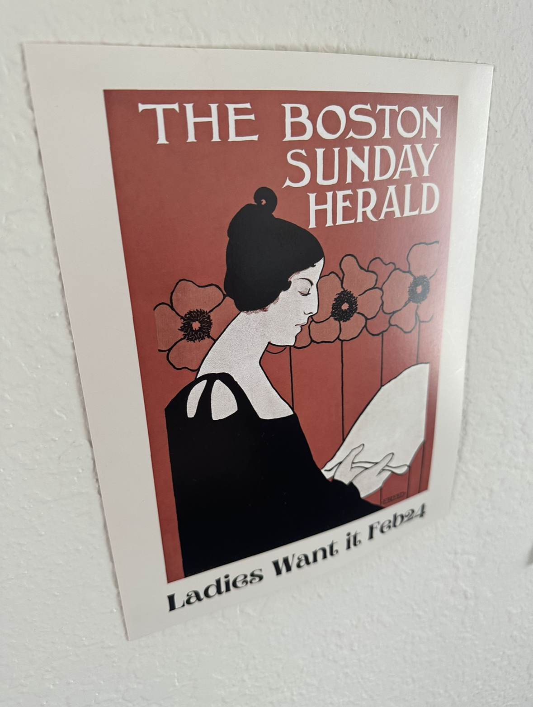
boston poster normal
|
Now, we can use a homography to warp these images into a front-facing view.
|
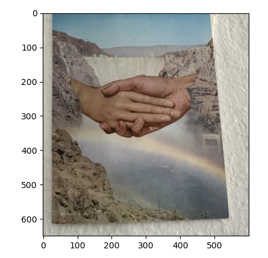
hands poster rectified
|
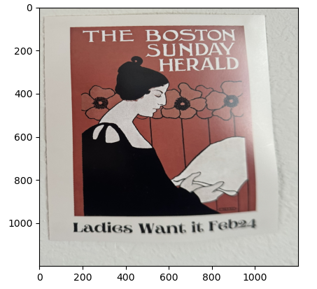
boston poster rectified
|
🌎 Part 4: Blend Images into a Mosaic
4.1 The Bay Bridge
My first mosaic was the one I used to build this whole project! I had many, many trials....
4.2 My bedroom
Since we needed 3 mosaics, I chose to do my bedroom next.
|
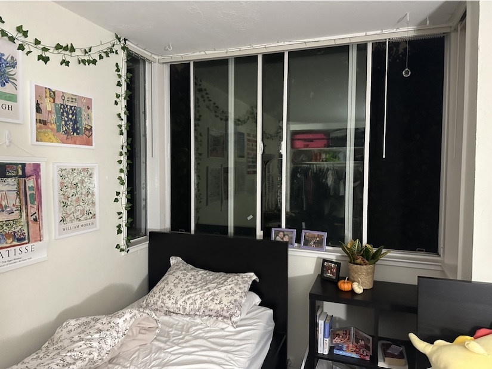
bedroom0
|
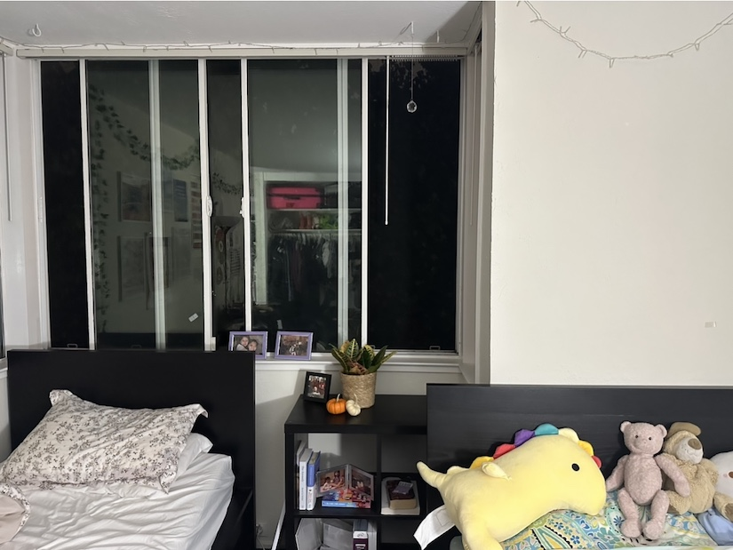
bedroom1
|
4.3 My living room
For the 3rd mosaic, I chose to do my living room.
|
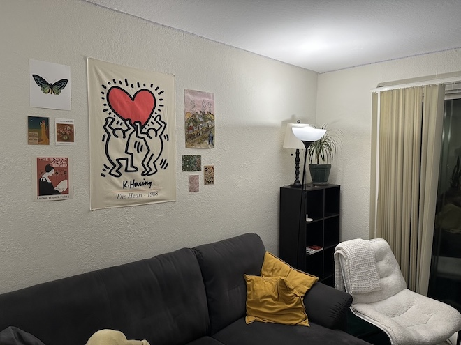
livingroom0
|
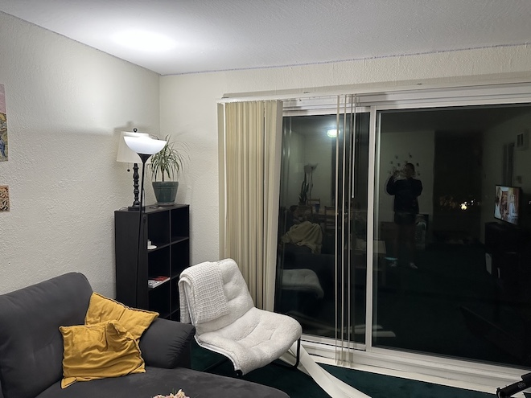
livingroom1
|
I really enjoyed learning how to warp the images together! I've never learned
about homographies or image warping before, so it was exciting to learn something
new to make images match up with each other. I'm looking forward to part 2.